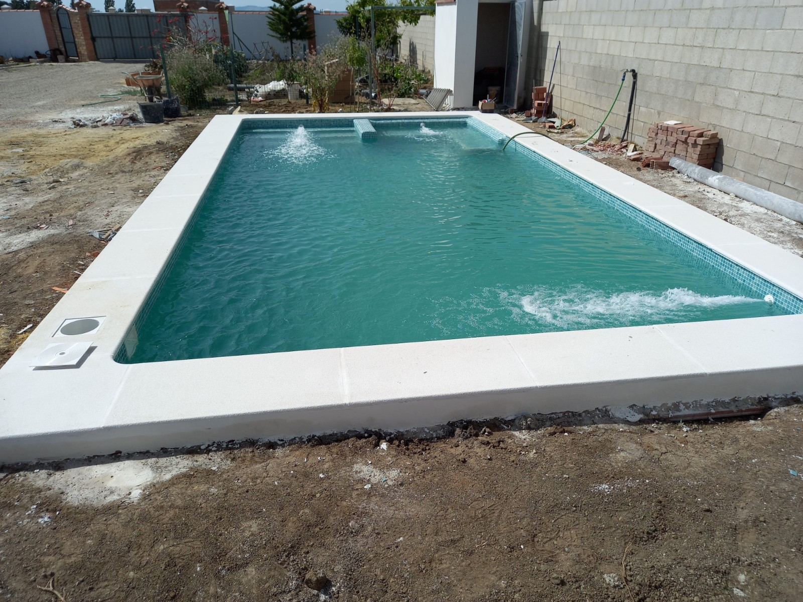
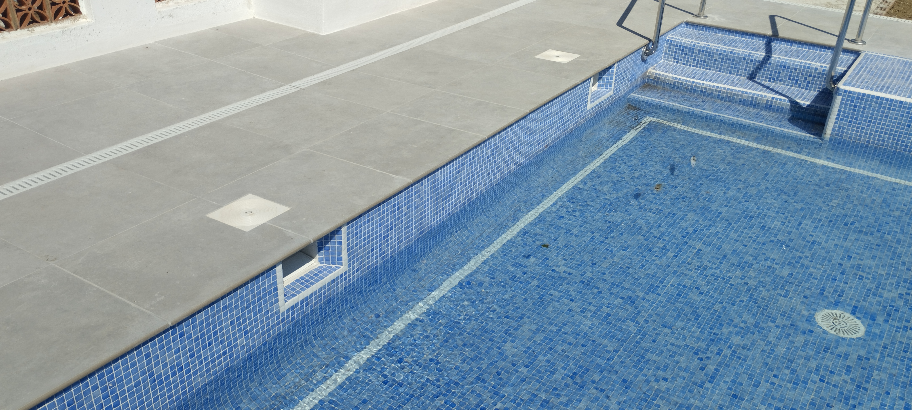

Forma, medidas y profundidad
Estudiamos el espacio disponible y cómo quieres disfrutar la piscina. A partir de ahí definimos la forma del vaso, las profundidades y la ubicación de las escaleras.
TU PISCINA · TU FORMA DE DISFRUTAR
Una piscina con el agua por debajo del borde y un sistema de recogida en la superficie. Diseñamos el conjunto para que encaje con tu espacio y con el uso que quieres darle.
Consultar mi proyecto
EL AGUA, EN MOVIMIENTO
El skimmer es una abertura en la pared del vaso que recoge agua de la superficie. Su cesta retiene residuos grandes, como hojas, antes de que el agua continúe hacia el sistema de filtración.
Tras pasar por la depuración, el agua vuelve a la piscina por las boquillas de impulsión. La posición de estos elementos y el dimensionado del equipo se estudian para favorecer la circulación del agua.
En el diseño habitual, el nivel del agua queda por debajo de la coronación. La altura adecuada depende del modelo de skimmer y de las indicaciones de su fabricante.

ANTES DE CONSTRUIR
La elección del sistema es solo una parte del proyecto. También importan el vaso, los accesos y el entorno.
Estudiamos el espacio disponible y cómo quieres disfrutar la piscina. A partir de ahí definimos la forma del vaso, las profundidades y la ubicación de las escaleras.
El número y la ubicación de los skimmers, las tuberías y el equipo de filtración deben dimensionarse conjuntamente. No se eligen solo por el tamaño exterior de la piscina.
Valoramos el soporte y la compatibilidad del revestimiento. La coronación y el pavimento exterior completan el diseño y deben elegirse pensando en el uso junto al agua.
Prever un lugar accesible para la depuración facilita las revisiones y el mantenimiento. También estudiamos la iluminación y las opciones de tratamiento del agua.
ELEGIR CON CRITERIO
En una piscina skimmer, el agua de superficie se recoge por las aberturas de la pared. En una desbordante, alcanza el borde y pasa a un canal de recogida, conectado al sistema de compensación.
Una piscina skimmer convencional no necesita el canal y el depósito de compensación propios de un sistema desbordante. Eso cambia el espacio necesario y la solución hidráulica.
La elección depende del efecto visual que buscas, de la parcela y del alcance de la obra. Para comparar presupuestos conviene revisar qué incluye cada propuesta, además del tipo de piscina.
Ver otros tipos de piscinasPARA DISFRUTARLA CADA DÍA
El skimmer ayuda a recoger suciedad superficial, pero no sustituye el cuidado del agua ni la limpieza del vaso.
Mantén el nivel indicado para el equipo y revisa las cestas para evitar acumulaciones de residuos. La frecuencia depende del uso y de la suciedad del entorno.
Controla el pH y el desinfectante, limpia el vaso y sigue las instrucciones de mantenimiento del filtro. La cloración salina tampoco elimina estas tareas.
RESOLVEMOS TUS DUDAS
No. El sistema puede estudiarse para distintas formas de vaso. La geometría y la ubicación de los elementos de circulación se valoran dentro del proyecto.
Sí, puede plantearse un equipo de cloración salina dimensionado para la piscina y compatible con sus materiales e instalaciones. Sigue siendo necesario controlar el agua y mantener los equipos.
El presupuesto depende de las medidas, el terreno, los accesos, la estructura, los acabados y las instalaciones. Para valorarlo necesitamos la localidad, fotos del espacio y una idea de las dimensiones.
Sí. Primero hay que revisar el estado del vaso, los revestimientos, los skimmers y las instalaciones para definir qué conviene conservar y qué necesita renovación.
Trabajamos desde Arcos de la Frontera en la provincia de Cádiz. Indícanos la localidad y el tipo de trabajo para estudiar tu proyecto.
OCM POOL · CERCA DE TI
¿Quieres construir una piscina skimmer o renovar la que ya tienes?
Envíanos la localidad, unas fotografías y las medidas aproximadas. Con esa información podremos estudiar el siguiente paso y si hace falta visitar el espacio.
Pedir presupuesto por WhatsAppVer la galería de OCM POOL